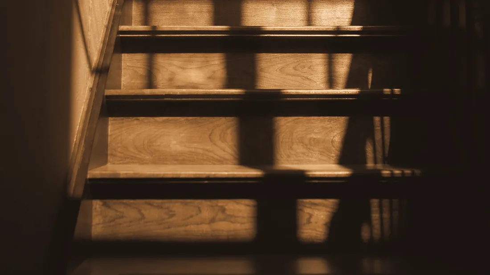

There are sixteen stairs and no elevator.
My room is on the first floor, one flight up from the street, and the building has no elevator. I’d rather you knew now than found out at the door. Here’s what I can arrange.
The stairs
Sixteen stairs in one flight, with a handrail on the right going up and a small landing at the top. There’s nowhere to sit halfway.
The ground-floor space
There’s a ground-floor space in the building that I can use by arrangement for any one-to-one session. Group breathwork is upstairs only. Please tell me when you book, so that I can reserve the space and be there to meet you.
Getting to that space
The entrance is at the rear of the building, through Tanner’s Yard, and it’s step-free. Accessible parking is in the Marl Street lot, two streets away.
Restrooms
The accessible restroom is on the ground floor only. The restroom upstairs is small and has no grab rails.
Longer appointments
If you’d like more time, ask for a longer appointment when you book. I’ll add up to twenty minutes at no extra charge.
Chair-based sessions
Acupuncture and breathwork can both be done in a chair.
Language
I speak English and Armenian. Tell me if you’d like an interpreter and I’ll arrange one.
This website
If your device is set to reduce motion, everything on this site that moves stops: the light, the water and the stones become still photographs, and the breathing pacer becomes a still diagram. Nothing on the site plays sound.
Ask me
If I’ve missed the thing you need to know, call me before you travel.
(463) 555-0142